A 3D debrief of your engagement, built from ForeFlight track logs.
Watch the merge, scrub the timeline, and study range & closure — right on your iPad.
Version 0.2 · Runs entirely on the device — nothing is uploaded.
Questions or updated versions: LCDR Matthew “Jojo” Thomas · 301-473-3103
Part A · One-time setup
1 Install Microsoft Edge one time
The tool is a single web page. iPad won’t run it from a file in Safari, but Microsoft Edge will.
Open the NAVAIR App Catalog from your home screen.
Search for Microsoft Edge and install it (it’ll show Installed when done).
Screenshot 01
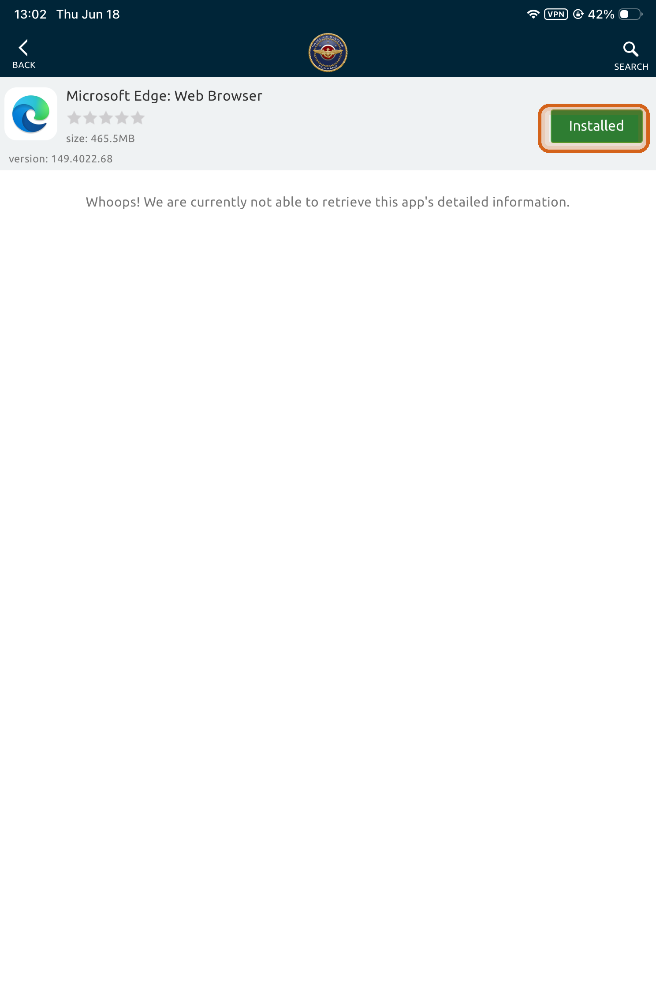
Microsoft Edge in the NAVAIR App Catalog, installed and ready.
Why Edge? It’s the one approved app that can both open the local file and let you pick your KML files. You only install it once.
2 Get the tool file one time
It’s a single HTML file (about 1 MB) named like bfm-debrief-v0.2.html.
Contact me to get the current version — I’ll send you the latest bfm-debrief-vX.Y.html.
Save it to your iPad (Files app). The version number is in the filename — newer releases will be v0.3, v0.4, etc.
Screenshot 02
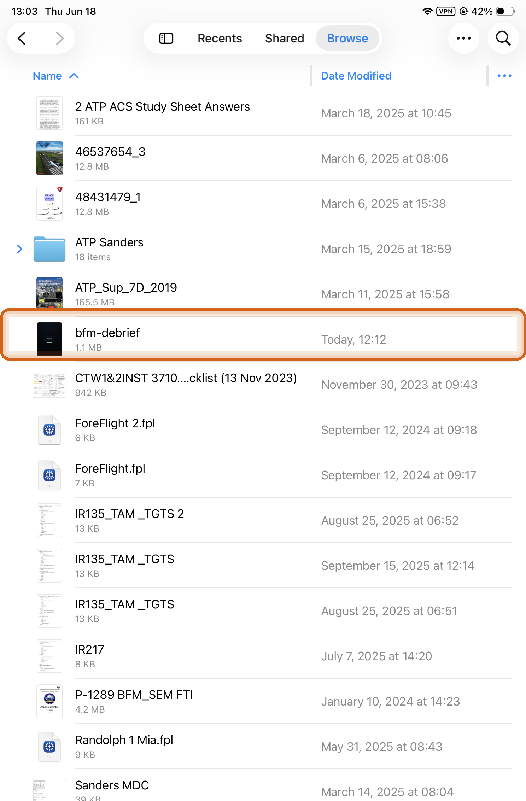
The saved bfm-debrief file in the Files app.
Replacing an old version? Just save the new file — each version is fully self-contained, so you can delete older ones once the new one works.
3 Open it in Edge
From the Files app, hand the file to Edge.
In Files, press and hold the bfm-debrief file.
Tap Share, then choose Open in Microsoft Edge (tap More first if you don’t see it).
The tool’s start screen loads in an Edge tab.
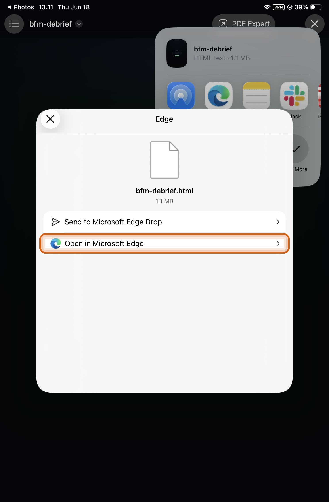
Share → Open in Microsoft Edge.
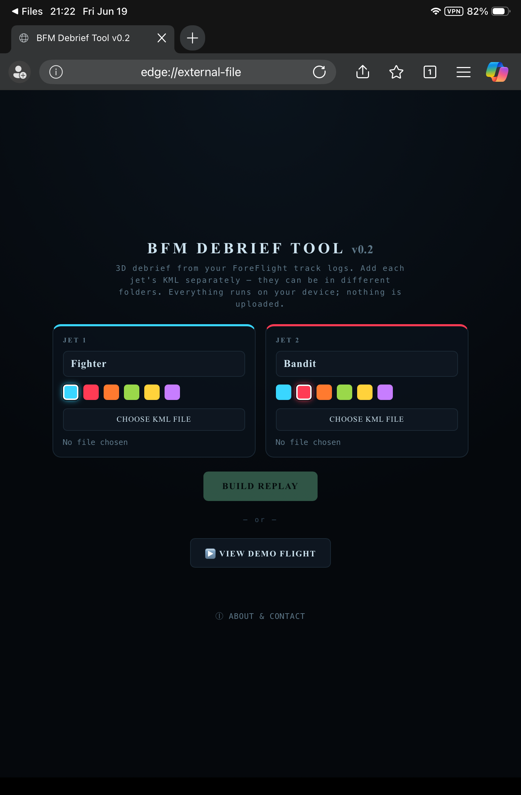
The start screen, now open in Edge.
4 Try the demo first
See how it works before loading your own logs.
On the start screen, tap ▶ View demo flight.
The 3D replay loads, paused. Tap PLAY at the bottom to roll it; drag the 3D view to orbit.
Screenshot 05
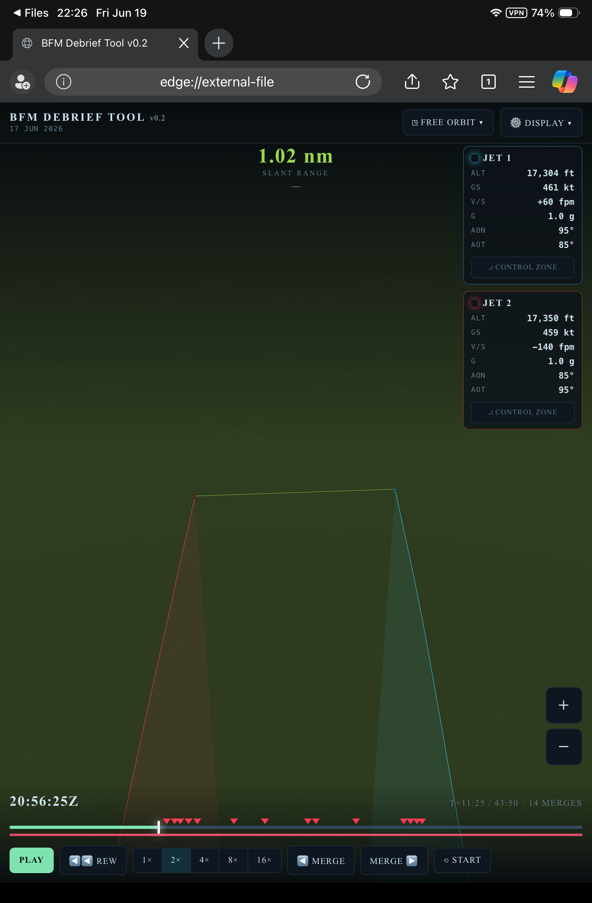
The demo engagement — jet readouts, slant range, and the merge timeline.
Part B · Each debrief
5 Export each jet’s track log from ForeFlight
Both jets’ logs need to land on the one iPad that will run the tool. Export each from ForeFlight the same way — only the final step differs.
Before you fly: in ForeFlight Settings → Track Log, turn on Enable Start/Stop Control and Enable Auto Start/Stop so every hop is recorded automatically.
Tap the Share icon (top right), then Open KML in….
In the share sheet, finish one of two ways:
On the iPad that will run the tool — tap Save to Files, choose On My iPad → Edge in the sidebar, then tap Save.
From the other jet’s iPad — tap AirDrop and send the KML straight to the host iPad. No need to save it first; just Accept it on the host iPad.
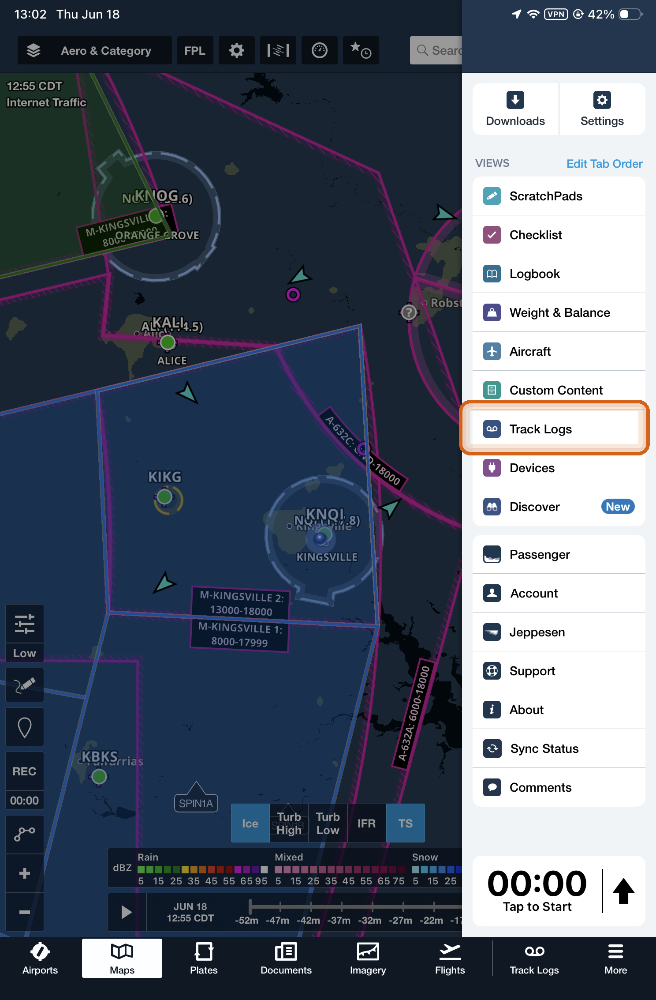
Open Track Logs from the ForeFlight menu.
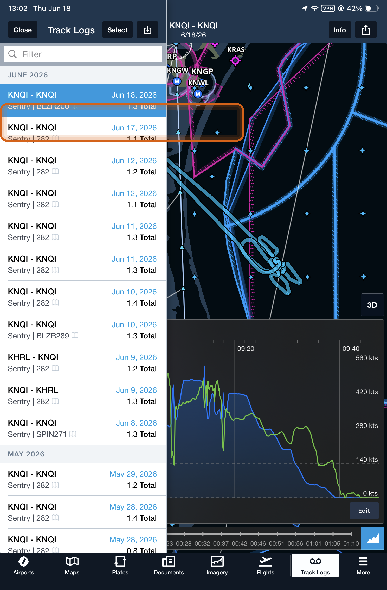
Pick the flight by date.
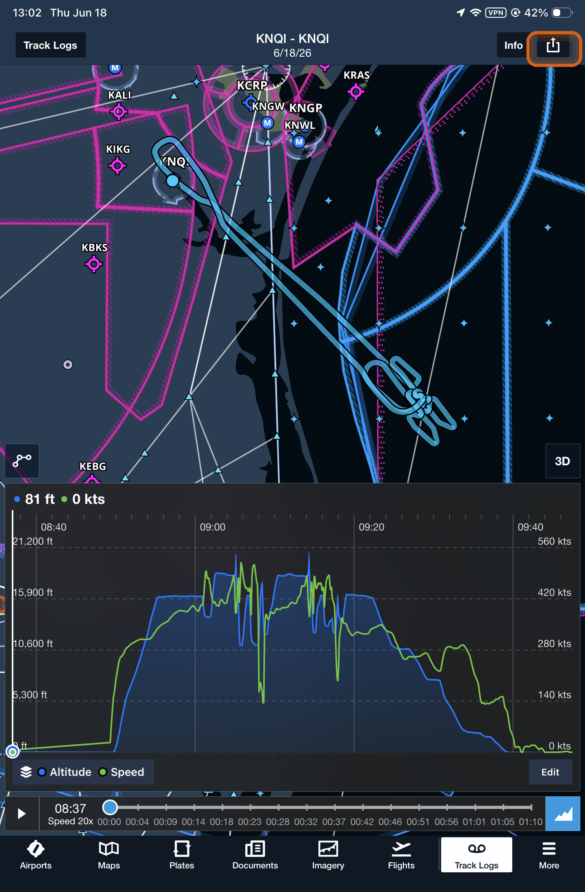
Open the log, then tap Share (top right).
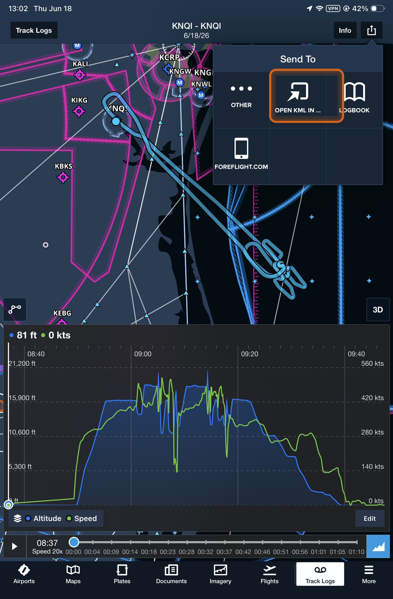
Choose Open KML in….
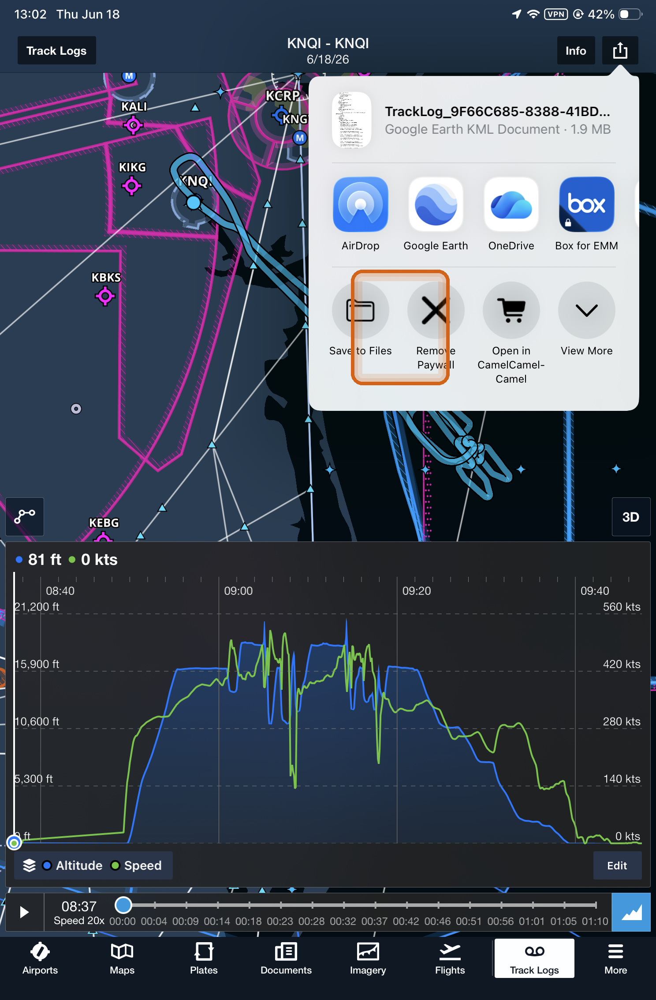
Same share sheet, two options: AirDrop (top) to send the .kml to the host iPad, or Save to Files (bottom) to keep it on this one.
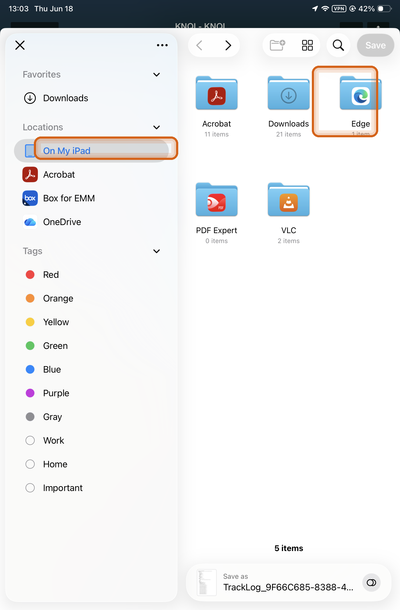
Saving on the host iPad: pick On My iPad → Edge, then Save.
Heads-up: the device lock blocks the Downloads folder. Save into the Edge folder under On My iPad instead — the file will be right there when you tap Choose KML file.
Goal: both KMLs on the host iPad. One pilot saves their own log to the Edge folder; the other AirDrops theirs over. You’ll pick each one individually in the next step.
6 Load your flight into the tool
Back in the tool’s start screen (in Edge), add the two KMLs and build the replay.
In the Fighter card (blue by default), optionally rename it or tap a different color, then tap Choose KML file and pick that jet’s .kml.
Do the same in the Bandit card (orange) with the other jet’s file.
Tap Build replay.
Tip: the names and colors you set here label the two jets everywhere in the replay — readouts, traces, and the timeline.
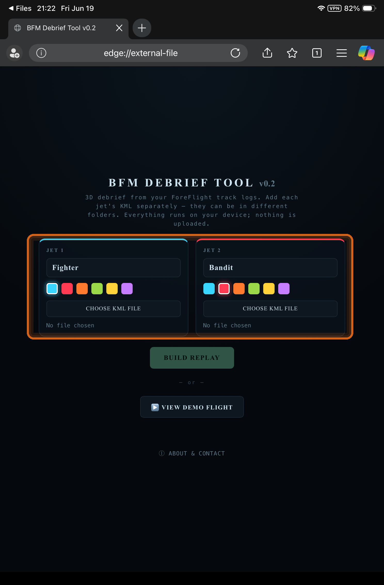
Name each jet and pick a color, then Choose KML file in each card.
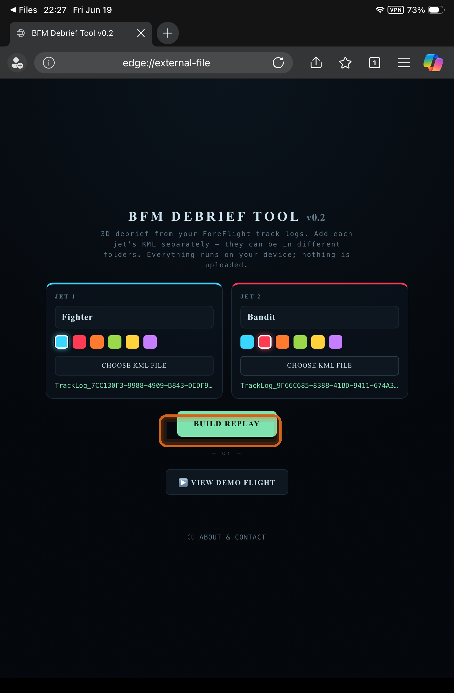
Both KMLs loaded — tap Build replay.
7 Getting around the replay
Everything you need is in the top header and the bottom transport bar.
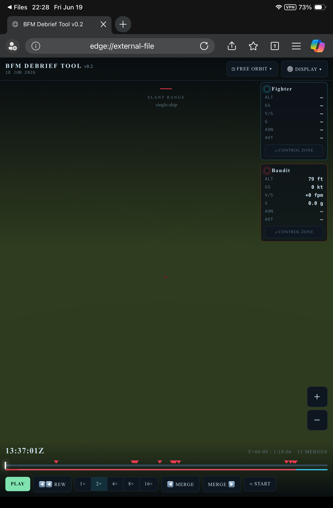
Your engagement, loaded — view menu and Display up top, jet readouts in the corners, transport bar below.
Control
What it does
Drag on the 3D view
Orbit the camera. Pinch to zoom (or use the + / − buttons on the right).
PLAY / timeline scrubber
Play, pause, and drag the playhead to any moment. Speed buttons: 1×–16×.
◀ Merge / Merge ▶
Jump to the previous / next merge — the orange ticks on the timeline mark each pass, set to the exact moment of closest range.
◳ Free Orbit ▾ (header)
Camera-view dropdown: God’s Eye, Chase J1/J2, Side, Free Orbit. The button shows the current view.
Display ▾ (header)
Display dropdown — toggle altitude curtains, range vector, traces, ground shadows, and grid, and set trail length.
Jet readouts (top corners)
Per-jet ALT, groundspeed, V/S, G, and angle-off nose/tail. Each box has a Control Zone toggle.
⊿ Control Zone (in each jet box)
Shows that jet’s control zone — a cone along its turn circle marking the offensive position behind it.
SLANT RANGE (top center)
Live distance and closure rate between the jets.
BFM Debrief Tool · v0.2 · The page works fully offline once opened — no internet or sign-in needed.
Your flight data never leaves the iPad.